Hotter 'N Hell Hundred - Ride Report
24 Aug 2013

14,000 riders! Hotter ’N Hell is basically an understatement.
Robyn and I left Georgetown early Thursday morning headed towards Wichita Falls pulling the vintage Airstream. After a 6 hour drive we arrived at Camp Bradford. Here we got to visit with Gary and Gay Bradford and their wonderful family (kids and grandkids).
The local newspaper came by on Friday to take a picture of the group and all the recumbents gathered in one place. Gary and Gay alone probably have twenty recumbents between them.
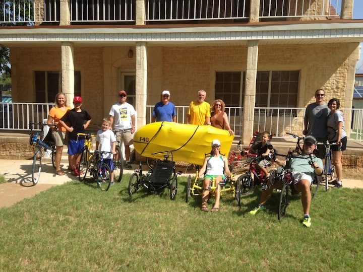
Thursday afternoon Gary drove us into town to pickup our ride packets and see the vendor booths. Pack pickup was well organized and we quickly breezed through the vendor area.
Friday we went into town again to the mad house the place had become. Lots of people arrive on Friday and the place was packed. We visited many of the vendor booths. The rest of the vendors had arrived overflowing outside the convention center into the tented area. Looks like I might have found a new rear wheel for the F-40. Friday night was spaghetti night at Camp Bradford and Gay cooked a meal for about 20 people. Lots of good food!
Saturday morning it was up bright and early to arrive at HHH parking area around 5:30 am. Took around 40 minutes to get my F-40 and Robyn’s Catrike Expedition setup to be ride ready. By 6:15 am we were at the start line right up front where all the tandems and recumbents start. Probably at least 200 other recumbents in the ride. All different makes and models. Some I did not even recognize what they were.
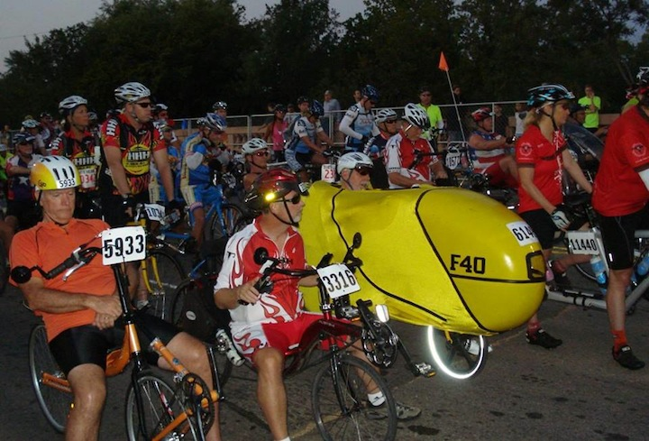
Let the ride begin!
This it by far the biggest ride I have ever done. Next closest was the GASP ride (Greater Austin to Shiner Peddle) which was 98 miles and had about 8,000 riders.
The ride support is incredible. Traffic control at every intersection and tremendous support at every rest stop. Helpers to hold your bike, helpers with pictures of ice water or power aid to quickly refill your bottles. It was very nice!
The community support was tremendous also. All throughout the ride, all 101.6 miles, in every community we rode through, families were out in their yards sitting in lawn chairs cheering us on. In the morning parents had cups of coffee in their hands sipping as we passed by, in the afternoon I’m pretty sure they were not drinking coffee any more but they were even more happy to see us than in the morning.
I think I saw almost everyone I know that owns a recumbent bike. Starting at the very front like I did allowed me to say hi as they rode past me. Some people I got to say hi to multiple times as they would stop at a rest stop that I did not stop at and then would pass me again once they got back on the road.
Ron Swift on his carbent passed me about the 25 mile mark. My neighbor Justin passed me at the 33 mile mark and again at the 57 mile mark riding his DF in a big peloton. Justin did an amazing ride finishing just under 5 hours. Mark Lueck passed me on his Baron about the 80 mile mark. Saw one other F-40 and talked to the rider a little - cannot remember his name now. Although he did say Carl Murdock was up ahead on his F-40 somewhere. I never did catch up to Carl.
I need a sign on the side of the F-40
With 14,000 riders you get many questions out on the course. I can save a lot of repetitive talking by having a sign made.
- Yes it is hot in here.
- No I am not naked
- No it does not have A/C
- No it is not called the banana bike
- Yes I am peddling
Is it really "Hotter ’N Hell"?
To help clarify this question I’ve overlayed my Garmin temperature with the appropriate labeling such that one can easily determine for themselves. FWIW - Hell starts around 10:30am just after the morning clouds have burned off and now the sun beats down on everything in sight and no respite can be found anywhere.
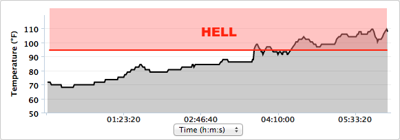
After the ride I knew that I was over heated and probably somewhat dehydrated. I drank lots of fluids and rested as much as possible. For two days I slept all the time and every time I woke up I had a splitting headache where my head felt like is was going to explode. Finally sometime during the second day when I woke the right side of my head was ok and just the left side of my head hurt. Then later on the second day when I woke both sides were ok. Day three and I’m still having to take Advil a couple of times a day.
The Big Shoot Out
| 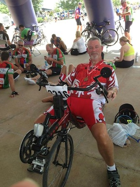 |
Billy Younts and I headed out the starting gate neck and neck. The lead groups were to fast for me. The first couple of hours I averaged close to 19 mph. Billy managed to latch onto the rear of a group traveling pretty fast and I saw him pull away into the distance. This was only 8 or 9 miles into the ride and I knew I could not keep that pace up for 100 mile so I slowed down to a speed I thought I could maintain. I thought to myself that Billy would not be able to keep up that pace for 100 miles and he'd start suffering later in the ride. Well, some time later Billy passes me again latched onto the rear of a fast pace line - they were still going to fast for me. Some time later Billy again passes me latched onto a fast pace line. Supposably, he needed to ‘stop for water’, but I really think he just liked passing me so he would stop at the next rest stop, wait and watch me ride though, wait a couple of more minutes, then hop on his Musashi and pass me again. Needless to say Billy ended up putting the hurt on me and finishing his first 100 mile century in an incredible time! Congrats! |
The Ride
It is a fast start. A straight 10 mile shot from Wichita Falls to Iowa Park on a road where they have closed off the two right lanes for the riders and there is plenty of room to pass others (or be passed). On small overpass at the start then flat, flat, flat and fast, fast, fast.
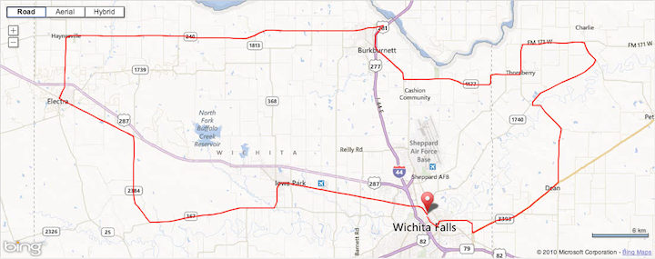
http://connect.garmin.com/modern/activity/365169242
I did the first 10 miles to Iowa Park in under 30 minutes and the first 50 miles (which had all the ’climbing’) in about 2 and one half hours. Really flying for me - easily on track for a five hour century ride.
Right around the 75 mile mark things started to deteriorate. Until then I was holding the highest average speed of any of my prior rides. Notice the chart below where I was kind of settling into just above an 18 mph average.
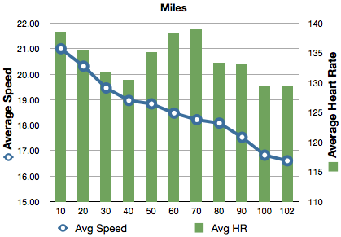
I started cramping really bad in my inner-quads. I found some shade and a place to pull over and sit and stretch. After stretching several minutes I got back on the bike and easy peddled the remaining 25 miles. I stopped at every rest stop from 75 miles on to refill liquids and stretch some more.
There was one last overpass where you are just re-entering Wichita Falls that was just a killer for me. I though I was going to have to get off and walk up it - but I finally made it up and over.
My ride time was pretty fast. My time off the bike really put the hurt on my elapsed time.
Next year I’ll need to be in better shape. The longest ride on the F-40 before this 100 miler was only 62 miles. Hopefully for next year’s HHH I’ll have more century experience.
Strava
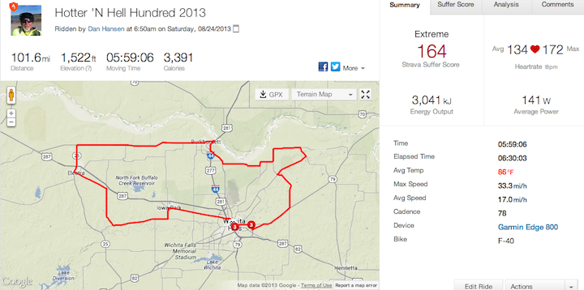
http://app.strava.com/activities/77582482
Chip Timing
Every bike number had a timing chip built-in. Of the 14,000 riders 3,763 had the number on their bike and finished the 100 Mile ride. Out of the 3,763 riders I came in 1,204.
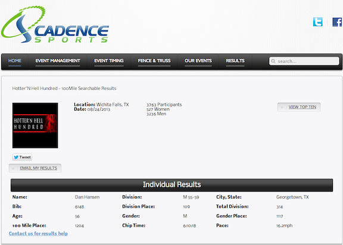
http://www.cadencesports.com/eResults.php?raceid=776&event=100Mile%20Searchable%20Results
Although these comparisons are not exact it is interesting to compare the F-40, Optima Baron and the Musashi.
Baron vs F-40
The Baron was ridden at the end of last season when I was in really good shape. The Katy Flatland Century only has 463 feet of climbing as recored on my Garmin. The F-40 is noticably faster until I started cramping.
| Optima Baron: Katy Flatland Century 2012 | F-40: Hotter 'N Hell Hundred 2013 |
|---|---|
| 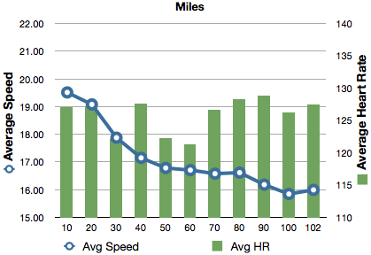 |
Musashi vs F-40
The Musashi was ridden at the beginning of this year and I was not yet in shape. I was in medium shape for HHH after being off for a month in June/July for travelling.
| Musashi: Georgetown Poppy Ride 2013 | F-40: Hotter 'N Hell Hundred 2013 |
|---|---|
| 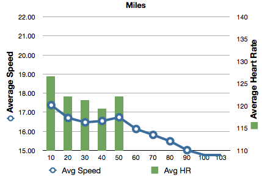 |
I know I left a lot out of this ride report. Hotter ’N Hell is a four day event covering a lot different rides. I really enjoyed myself and look forward to trying again next year.
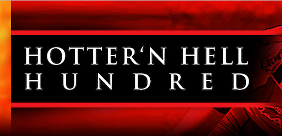